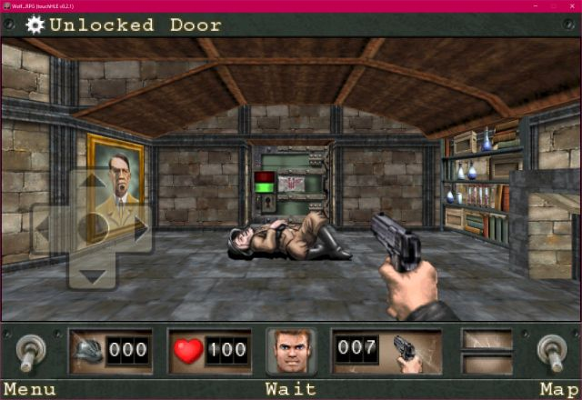

| App name | Wolfenstein RPG |
|---|---|
| Release year | 2009 |
| Developer/Publisher | id Software |
| First reported | |
| First reported by | @hikari-no-yume |
| Version number | Display name | Bundle identifier | Minimum iOS version | Best rating | Last updated | First reported by | |
|---|---|---|---|---|---|---|---|
| 1.0.2 | Wolf...RPG | com.eamobile.wolfbv | 2.1 | ⭐️⭐️⭐️⭐️⭐️ | @omagadsamsa | ||
| 1.1.1 | Wolf...RPG | com.eamobile.wolfbv | 2.2.1 | ⭐️⭐️⭐️⭐️⭐️ | @hikari-no-yume |
| Version number | touchHLE version | Operating system | GPU | Scale hack supported? | Rating | Reported | Reported by | Remarks | Screenshot |
|---|---|---|---|---|---|---|---|---|---|
| 1.1.1 | v0.2.3 | Android 13 | Mali-G57 | Didn't test | ⭐️⭐️⭐️⭐️ | @vajk326-dev | Menu buttons are hard to tap, only works after multiple tries, after starting a game it works fine | ||
| 1.1.1 | 0.2.2 | Ios (on Android) | ??? | Yes | ⭐️⭐️⭐️ | @DylanBeaudry | The Sewers Level hangs at the golden door. | ||
| 1.0.2 | v0.2.1-129-ga1b672e | Windows 10 | Gt 9000 | Didn't test | ⭐️⭐️⭐️⭐️⭐️ | @omagadsamsa | |||
| 1.1.1 | v0.2.1 | Windows 11 22H2 | AMD Radeon Vega Mobile | Didn't test | ⭐️⭐️⭐️⭐️⭐️ | @notprogramminggames | |||
| 1.1.1 | v0.2.1 | Windows 10 22H2 | NVIDIA GTX 1070 | Yes | ⭐️⭐️⭐️⭐️⭐️ | @hikari-no-yume | View |
| Rating | Description |
|---|---|
| ⭐️ | Completely broken: app crashes immediately without any user interaction. |
| ⭐️⭐️ | Only (part of) the main menu, intro or similar is working. |
| ⭐️⭐️⭐️ | Some of the main content of the app works, but with major issues. |
| ⭐️⭐️⭐️⭐️ | The main content of the app works (e.g. entire game is playable) with only small issues. |
| ⭐️⭐️⭐️⭐️⭐️ | Everything works. The app is fully usable. |
